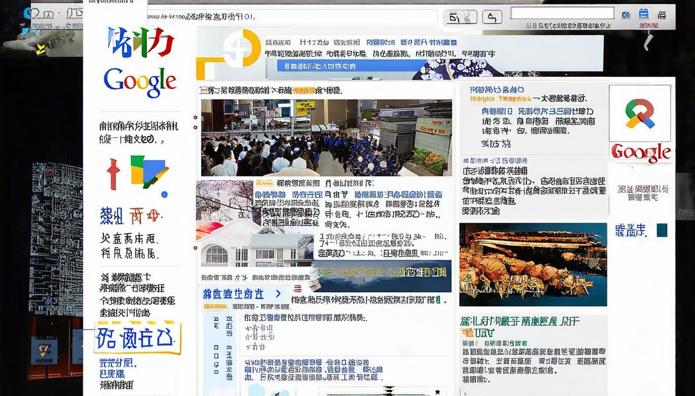
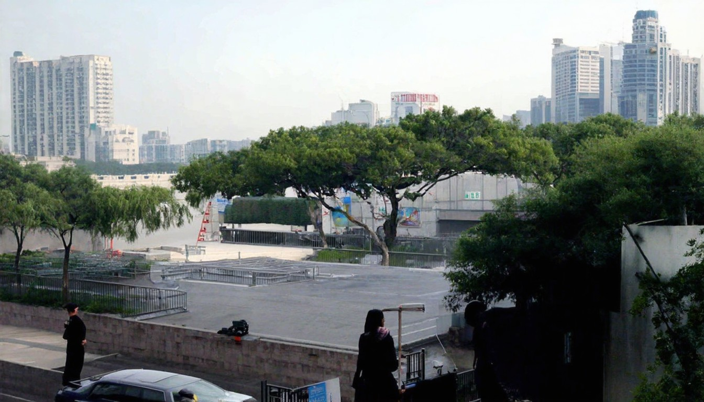

即時| 世界新聞網
## [不只軍工院士遭除名 余茂春：中頂尖科學家接連離奇死亡](https://www.worldjournal.com/wj/story/121474/9414869?from=wj_msg "不只軍工院士遭除名 余茂春：中頂尖科學家接連離奇死亡"). ## [密西根大學中國籍博士後 傳遭美方約談後跳樓自殺](https://www.worldjournal.com/wj/story/12146
2026年04月01日 · 全球热点速递
← 返回今日新闻## [不只軍工院士遭除名 余茂春：中頂尖科學家接連離奇死亡](https://www.worldjournal.com/wj/story/121474/9414869?from=wj_msg "不只軍工院士遭除名 余茂春：中頂尖科學家接連離奇死亡"). ## [密西根大學中國籍博士後 傳遭美方約談後跳樓自殺](https://www.worldjournal.com/wj/story/12146
大纪元新闻网大头条集锦集中了大纪元网上发表的全球政治、经济重大新闻及各地华人社区最关注新闻，以及生活消费、文学世界、娱乐体育等副刊类的精华文章。

# 国际新闻 - 美国之音中文网. * [跳转到内容](https://www.voachinese.com/p/6143.html#content). * [跳转到导航](https://www.voachinese.com/p/6143.html#navigation). * [跳转到检索](https://www.voachinese.com/p/6143.html#txtHea

[新聞](https://news.google.com/?hl=zh-TW&gl=TW&ceid=TW%3Azh-Hant). [新聞](https://news.google.com/?hl=zh-TW&gl=TW&ceid=TW%3Azh-Hant). [首頁](https://news.google.com/home?hl=zh-TW&gl=TW&ceid=TW%3Azh-Hant). [
### 跟着习近平读典籍：《四库全书》. 习近平始终牵挂着中华典籍的保护、修复与整理工作，他曾说“盛世修文，我们这个时代，国家繁荣、社会平安稳定，有传承民族文化的意愿和能力，要把这件大事办好。”在习近平的关心推动下，有许多中华优秀传统文化典籍得以很好地修复保护。**2026-03-31 12:42**. ### 春天，跟着总书记植下新绿播种希望. ### 拾光纪·“植”此青绿，跟着总书记共建美丽家
美軍突啓動不可能任務！直擊伊朗地下核命脈！特種部隊連夜突襲德黑蘭！中共軍演出大事！煙榴彈誤射觀禮區！中共領導嚇破膽當場抱頭逃跑！！！【熱點觀察】.
新华每日电讯 经济参考 瞭望 半月谈 中证报 上证报 中国记者 中国名牌 中国传媒科技 环球 瞭望东方周刊 参考消息 新华出版社. 北京 天津 河北 山西 辽宁 吉林 上海 江苏 浙江 安徽 福建 江西 山东 河南 湖北 湖南 广东 广西 海南 重庆 四川 贵州 云南 西藏 陕西 甘肃 青海 宁夏 新疆 内蒙古
俄罗斯总统普京周四（1月15日）表示，国际局势正在恶化，世界正变得更加危险，但他对委内瑞拉和伊朗的局势却保持沉默。 迄今为止，普京尚未就美国推翻委内瑞拉
# 您的摘要. WINTER WEATHER ADVISORY IN EFFECT FROM 6 PM TUESDAY TO 9 PM MDT WEDNESDAY ABOVE 9000 FEET \* WHAT...Snow expected above 9000 feet. Total snow accumulations between 6 an 12 ... ### 焦點新聞. 【持續更新】

本網站使用相關技術提供更好的閱讀體驗，同時尊重使用者隱私，點這裡瞭解中央社隱私聲明。當您關閉此視窗，代表您同意上述規範。. Your browser does not appear to support Traditional Chinese. Would you like to go to CNA’s English website, “Focus Taiwan”? 壽險避險比率45.1%新低